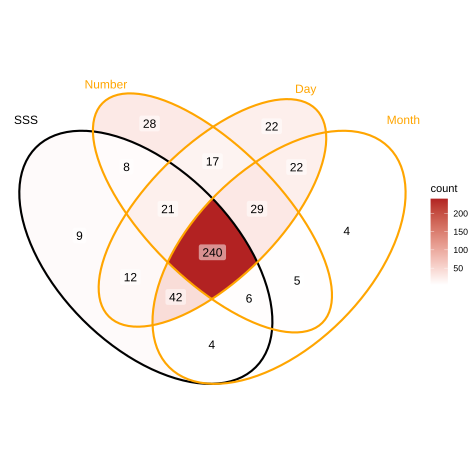
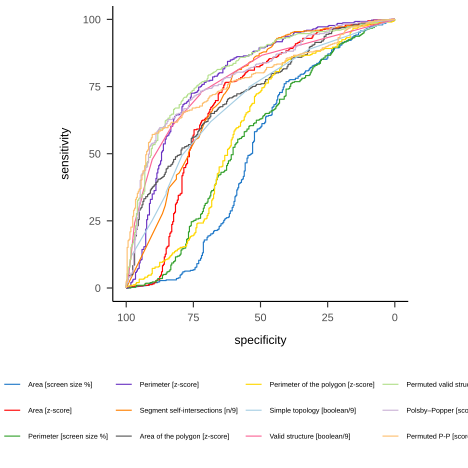
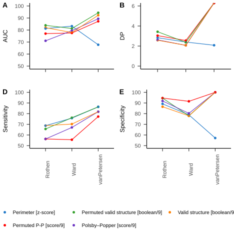
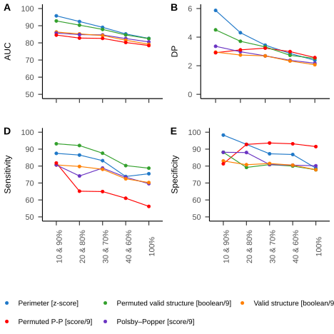
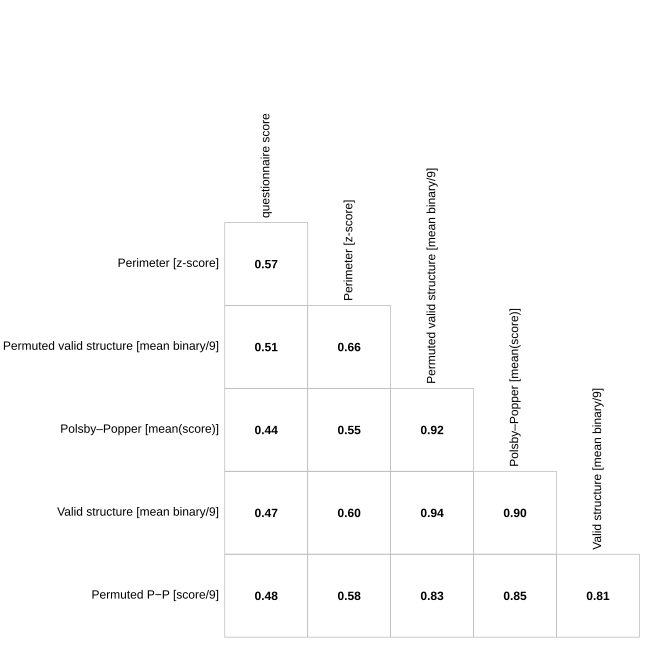
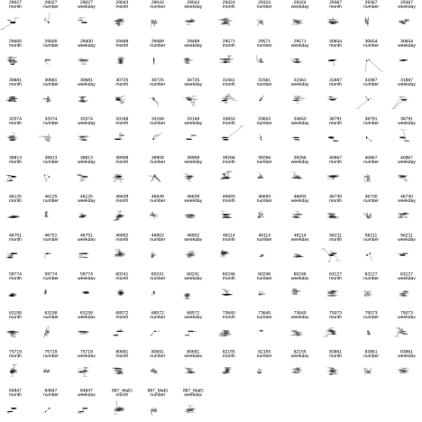
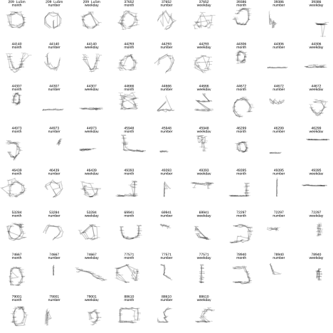

Pre-registered report: Mapping Synesthetic Sequences in Space: Improving Consistency Test by Harnessing Cartography Tools.
Rémy Lachelin, Chhavi Sachdeva, and Nicolas Rothen
Psychology, UniDistance Suisse
Author Note
Rémy Lachelin  https://orcid.org/0000-0002-8485-7153
https://orcid.org/0000-0002-8485-7153
Chhavi Sachdeva  https://orcid.org/0000-0002-0074-4371
https://orcid.org/0000-0002-0074-4371
Nicolas Rothen  https://orcid.org/0000-0002-8874-8341
https://orcid.org/0000-0002-8874-8341
Author roles were classified using the Contributor Role Taxonomy (CRediT; https://credit.niso.org/) as follows: Rémy Lachelin: conceptualization, methodology, formal analysis, data curation, and Writing - Original Draft. Chhavi Sachdeva: conceptualization, methodology, and Writing - Review & Editing. Nicolas Rothen: conceptualization, Writing - Review & Editing, supervision, project administration, and Founding Acquisition
Correspondence concerning this article should be addressed to Rémy Lachelin, Psychology, UniDistance Suisse, Schinerstrasse 18, Brig-Glis, Valais 3900, Email: remy.lachelin@fernuni.ch
Abstract
Sequence-space synesthesia is a perceptual condition in which ordinal sequences (e.g., numbers, days of the week, or months of the year) are experienced as occupying specific spatial locations. This perceptual condition is identified using self-reports (e.g. questionnaires) and behavioural consistency tasks. Existing consistency tests measure the spatial distance between responses to repeated stimuli, but they ignore the ordinal and geometric features of spatial-forms. This preregistered study consists of a present and future analyses. In the present analyses, we optimise SSS diagnostics from consistency test by extracting novel geometric features at the spatial-form level. To do this, we first evaluate classification performances of old and new features in a large (N = 685) aggregated sample from four available and independent datasets. We then harness a geographic toolbox to extract metrics from the spatial-forms level. Finally, receiver operating characteristic (ROC) analyses are conducted to assess the discriminative performances of each method. The results show that permuted topological validity of spatial-forms and the perimeter between stimuli performs equally well in detecting SSS. In a future study, we will examine predictive validity of the selected methods on an independent dataset that has yet to be collected. Findings from the present study highlight the relevance of topological principles for sequence-space representations and aims to optimise the ability of consistency tests to detect SSS.
Keywords: Sequence space synaesthesia, Synaesthesia/synesthesia, consistency test, space, time, numbers
Pre-registered report: Mapping Synesthetic Sequences in Space: Improving Consistency Test by Harnessing Cartography Tools.
Introduction
Sequence-Space Synaesthesia (SSS) or visuo-spatial forms is the phenomenon where people visualize ordered sequences in particular spatial positions. For example, numbers, weekdays or months (synesthetic inducers) are represented as arranged into specific spatial positions in space (synesthetic concurrent). The synaesthetic spatial-forms can be complex and have variable geometric forms. Those geometric forms might be different for each categories (i.e. number-forms weekdays and months), with forms such as ellipses, zig-zags or curbed lines Flournoy (1893). SSS are usually identified using questionnaires and consistency tests. An individual is identified as SSS based on the variability at the stimulus level between repeated responses: less variable responses being an indicator of the consistent response characteristic of SSS. However, stimulus level consistency can also be achieved by responding to the same position for all stimuli. Furthermore, it might favour linear over circular spatial-forms and is not informed about the ordinality between stimuli (e.g. 1 → 2 → 3, etc.). Here, we aim at optimizing the identification of SSS from consistency tasks using geometrical characteristics of spatial-forms from ordered stimuli or inducers.
SSS frequently co-occurs with other subtypes of synaesthesia and as for other subtypes of synaesthesia it’s idiosyncratic. Colour-grapheme synaesthesia, where a grapheme inducer triggers a concurrent colour (i.e. “A” seen as red), co-occurs at 71 % to 76 % with SSS (Sagiv et al., 2006). Nevertheless, across different synaesthetic subtypes, self-reported SSS tend to cluster together (Ward & Simner, 2022), indicating a degree of internal homogeneity and justifying to study it as a distinct phenomenon. Spatial-forms are idiosyncratic, which results in considerable heterogeneity in how this phenomenon is manifested across individuals. One source of heterogeneity is given by dimensionality: some SSS experiences can involve three-dimensional (3D) and two-dimensional (2D) arrangements (Eagleman, 2009; Price & Pearson, 2013). Another source of heterogeneity is the reference frame, for example, the spatial-forms might take place in an external space around the body (i.e. projector) or in an egocentric internal space (i.e. associator) (Dixon et al., 2004; Smilek et al., 2007). Further variability can be explained by temporal-spatial properties and mental-manipulation of spatial-forms such as “zooming” in and out or rotating or shifting perspectives at will (Gould et al., 2014; Jarick et al., 2009) Lastly, the shape, complexity and layout of the spatial-forms are also heterogeneous such as forming for example ovals, lines, zig-zags or loops. With some recurring shapes being more frequent across SSS, such as ovals for months (Eagleman, 2009).
Despite the after mentioned heterogeneities, SSS is also phenomenological characterized. There might be five main characteristics for synaesthesia in general and specifically SSS (Deroy & Spence, 2013; Seron et al., 1992). Automaticity: the inducer automatically triggers the concurrent. Unidirectionality: while the inducer triggers the concurrent, the concurrent does not trigger the inducer. Developmentally: the experience was already present during childhood. Consciousness: The concurrent is consciously perceived. Consistency: the inducer-concurrent pair remains stable in time within subject. While some of these characteristics can be captured with self-reported questionnaire (i.e. for development and consciousness), other can be quantified more objectively using behavioural tasks such as consistency tests (Baron-Cohen et al., 1993).
Consistency tests
Consistency tests are extracted form behavioural tasks used to evaluate how stable synesthetic experiences are over time (Rothen et al., 2013, 2016). They do this by presenting the same stimuli repeatedly and assessing how similar participant’s responses are across repetitions (i.e. inducer-concurrent associations). High consistency is often taken as evidence for synaesthesia. Consistency tests have proven effective for colour-grapheme synaesthesia. Measures of individual consistency can be derived using colour pickers while repeatedly presenting the same inducer (i.e. “A”). The quantification of the distance between concurrents from the same inducers is used to discriminate consistent synaesthetes from controls. Specifically, the euclidean distance in CIE L*u*v colour space, which is designed for perceptual uniformity, yields optimal classification accuracy when using a cut-off estimated as deduced from a larger representative sample (Rothen et al., 2013). A similar rationale to that used for colour-grapheme synaesthesia has been applied to characterize SSS from consistency tasks.
In the SSS consistency task, participants complete multiple rounds of the same stimuli (e.g., digits, days of the week, and months of the year) and are asked to indicate a spatial location for each stimulus by clicking on the computer screen. Brang et al. (2010) for example evaluated consistency as the distance between repeated responses to the same inducer or stimuli (e.g. January and January) relative to adjacent stimuli (e.g. February). A response was defined as consistent if it fell within 1.96 z-scores. However, this criterion was noted to be potentially too conservatory, as it identified synaesthesia in 4 of 81 self-reported synaesthetes. Geometrical features such as area and perimeter between the coordinates of repeated inducers have further been used as a measure of the distance between same inducers, hence as a metric for consistency. Less consistent responses leading to smaller triangle perimeters and area (Rothen et al., 2016). A cut-off corresponding to less than 0.203 % average responses area in proportion to the total screen area to classify as SSS has been suggested (see also Ward et al., 2018).
However, several general caveats of consistency tests using concurrent or stimulus level metrics have been identified. Some tests may favour certain spatial-forms (Ward et al., 2018) in particular those with linear or highly regular spatial layouts, i.e. elliptical patterns for months(Brang et al., 2010; Eagleman, 2009; Flournoy, 1893). Another concern is that participants that respond with the same position, for example when not knowing the response, will have artificially high consistencies with those metrics (Rothen et al., 2016). This has led to alternative approaches such as to add the standard deviation of responses, questionnaire cut-off (Ward et al., 2018) or permutation-based comparison of individual responses to chance levels for colour-grapheme (Root et al., 2021) and SSS (Ward, 2022). Finally, these consistency tests evaluate the variability of responses to the same stimuli, therefore the ordinality between stimuli is not taken into account. Synaesthetic spatial-forms follow ordinal rules (e.g. Monday → Tuesday → Wednesday). In the domain of numerical cognition, ordinality has been identified as an important information when processing sequences (Lyons & Beilock, 2013). Some studies of SSS have systematically investigated ordinality by investigating metrics of adjacent inducer-concurrent pairs such as distances (Brang et al., 2010) or angles (Eagleman, 2009). However, ordinality of the concurrent spatial-form might be particularly relevant considering all the stimuli of a certain category (i.e. weekdays or months). The spatial-forms of the concurrents are often spatially structured into configuration such as lines or polygons that may follow distinctive geometrical rules. For example linear layouts have been described in early accounts of number forms (Flournoy, 1893; Galton, 1880).
Present study
The goal of this registered report is to compare different consistency tests on their classification performances of individuals with SSS and controls doing the consistency task using Receiver Operator Characteristics (ROC) analyses. In the present Phase I, we merge four previously available datasets using the same task on both SSS and control groups (Ward, 2022). First, we aimed to reproduce established consistency test methods based on stimulus-level consistency metrics, such as area and perimeter. Second, we explored a new approach comparing geometrical features across repetitions of the same categories (weekday, month and numbers), such as segments and polygons. These novel tests are designed to take advantage of the sequentiality or ordinality between the responses and the geometrical properties at the spatial-form level, see Figure 2. All the consistency tests are then compared using ROC analyses on their correct classification performances of self-reported SSS and control groups.
In a future study, we will assess whether the tests identified in the present study generalize and are validated on an independent dataset that is yet to be acquired (Sachdeva et al. (2024), Stage 1 in-principle acceptance, see also https://osf.io/6wn4m).
Methods
Code and data for “one-click” reproducibility of this manuscript including the following analyses are available on git-hub (https://github.com/remLach/SpaceSequenceSynDiagnostic). All the analyses are conducted in R, using the following packages ‘pROC’ v. 1.19.0.1 (Robin et al., 2011), ‘sf’ v. 1.0.21 (Pebesma & Bivand, 2023) and for visualization ‘ggplot2’ v. 4.0.1 (Wickham, 2016), ‘ggVennDiagram’ v. 1.5.6 (Gao & Dusa, 2025).
Datasets and Participants
To base the optimization of the consistency test on the largest possible sample we looked for accessible datasets that used the same consistency tasks on groups of synesthetes and controls. We found four datasets that met these criteria. Two datasets were collected in laboratory settings Rothen et al. (2016) (see also https://osf.io/6hq94) and Van Petersen et al. (2020) (see also https://data.ru.nl/collections/di/dcc/DSC_2018.00019_653). The two others came from on-line testing Ward (2022) (see alsohttps://osf.io/nu5v4) and an additional dataset was gently provided by private communications with Professor Ward. To match the other datasets, stimuli of the weekdays and months categories were translated from Dutch to English in the dataset from (Van Petersen et al., 2020). For the number category we included only digits from 0 to 9 that where presented across all datasets (i.e. excluding the stimuli “50” and “100” for numbers in Van Petersen et al. (2020)).
From the merged datasets, we kept 685 from the total 689 participants. First, we excluded 0.02 % empty trials (i.e. skipped responses) including trials flagged for having the same x or y coordinates across conditions and repetitions, causing the depletion n = 2 participants(as in Rothen et al., 2016; Ward et al., 2018). n = 2 participants were excluded for having less than 4 coordinate points since polygons need at least four coordinate. Note therefore, that 31 participants of the final sample did not have responses in all three conditions X repetition cases. From the final sample of N = 685, 396 were synaesthetes and 289 controls, see Table 1 and Table 2.
Table 1
Synesthetes
| Synaesthetes | N before | N after | Age |
|---|---|---|---|
| (Rothen et al., 2016) | 33 | 32 | 23.1 |
| (Van Petersen et al., 2020) | 23 | 22 | 23.2 |
| (Ward, 2022) | 252 | 252 | 37.2 |
| Ward 2 | 90 | 90 | NA |
| Total: | 398 | 396 |
Table 2
Controls
| Controls | N before | N after | Age |
|---|---|---|---|
| (Rothen et al., 2016) | 37 | 37 | 28.2 |
| (Van Petersen et al., 2020) | 21 | 21 | 21.6 |
| (Ward, 2022) | 215 | 213 | 19.9 |
| Ward 2 | 18 | 18 | NA |
| Total | 291 | 289 |
Regarding the synaesthets profiles, detailed participant information such as questionnaire responses were only available from the two datasets from the data by Professor Ward (i.e. a majority of 573 participants). We described the self-reported profiles for the stimulus categories used in the consistency test (i.e. number, weekdays and month), see Figure 1. From this Venn-diagram we see that 240 of the SSS report having spatial-forms for Numbers, Days and Month; 42 only Days and Month; 21 only Number and Day. Also, 127 controls report spatial-forms for either Days, Numbers, Months or combinations.
Figure 1
Venn diagram of the types of self-reported SSS

Procedure
For the consistency task, each stimuli were presented randomly and sequentially centrally on the screen. Participant were instructed to click on the screen position where they visualize them. In Van Petersen et al. (2020) and Rothen et al. (2016) the participants were allowed to skip responses.
Stimulus included here were 7 weekdays (Monday to Sunday), 12 months (January to December) and 9 numbers (0 to 9). For all the data from Professor Ward the stimuli were presented in randomized order with the constraint that no stimulus was repeated until all unique stimuli (N = 29) had been presented once. The median display resolution was 1440 X 768, with a maximum of 2560 X 2025 and a minimum of 308 X 149.
Analyses
Consistency tests on the stimulus level
We reproduced the tests extracted from consistency tasks found in the literature such as area and perimeter between repetitions (Rothen et al., 2016; Van Petersen et al., 2020; Ward, 2022). Formally, the area (see Equation 1) and perimeter (see Equation 2) are calculated from the triangle (i.e. given three repetitions) formed by the x and y coordinates of the three repetitions of each stimuli (i.e. (x1, y1), (x2, y2), (x3, y3)).
Area = \frac{|x1y2 +x2y3 + x3y1 – x1y3 – x2y1 – x3y2|}{2} \tag{1}
Perimeter = \sqrt{(x2 - x1)^2 + (y2 – y1)^2} + \sqrt{(x3 - x2)^2 + (y3 –y2)^2} + \sqrt{(x1 - x3)^2 + (y1 – y3)^2} \tag{2}
Each stimuli’s area was then averaged by participants. The area metric is in % of the screen area to be able to compare with the consistency across studies using different screen sizes. To account for screen size and spread variability across the datasets and participants, area and perimeter were also calculated on individually normalized x and y coordinates (z-score). These methods compute consistency metrics at the stimulus level, the rationale is that consistent responses would show less variability between repetitions. For example, smaller area or perimeter of the triangle formed indicate more variability hence more consistent responses between the three repetitions.
Consistency tests on the space-form level
For the novel consistency tests, we extracted geometrical features at the spatial-form level for each repetition separately. Taking the stimuli as an ordered sequence we can consider them as a geometrical segments (i.e. open geometrical form) and polygons (i.e. closed geometrical form), similarly as originally described in Galton (1880).
We harnessed a geospatial analysis, the ‘sf’ package version 1.0.21 (Pebesma & Bivand, 2023) to extract polyons and geometry-based features from participant’s 2D (x,y) coordinate responses. This package allows, for example, to build and analyse segments or polygons and then extract multiple geometrical descriptors or features. Informed by the ordinality of the stimulus, we defined segments and polygon by conditions and repetitions. The rationale here was to determine whether, when considering the spatial-forms formed by stimuli as ordered coordinates (i.e. as segments or polygon) they remain consistent between repetitions for each individuals. We extracted the topological validity, topological simplicity and a compactness score for each polygons (i.e. 3 conditions X 3 repetitions: 9 polygons per participants.
Segment self-intersections.
The first consistency test extracted from the segments is self-intersection. We considered the spatial-forms as a segment constituted by the lines connecting consecutive stimuli separately for each category and repetitions (i.e. Monday (repetition 1) → Tuesday (repetition 1) → Wednesday (repetition 1), ect) and then counted the number of times each segment self-intersect. The rationale is that SSS should have less chance to produce that self-intersect than control. The number of self-intersections were computed separately for each repetitions and conditions and averaged per participants.
Topological validity and simplicity.
We assessed topological validity using geometric validation test. Topological validity tests if a polygons is well-formed and valid according to the Open Geospatial Consortium (OGC) Simple Features Specification (Herring, 2010). A polygon is considered topologically valid if it satisfies the following criteria: (1) if polygon rings are simple (i.e., they do not touch or self-intersect), (2) boundary rings to not cross (3) boundary rings may only touch points tangentially (4) rings that define holes are contained within the exterior ring (5) the polygon rings must not splits the polygon (PostGIS 3.6.2dev Manual, n.d.). Topological simplicity evaluates whether a geometric object has a simple structure without self-intersections or self-tangencies. According to the OGC Simple Features Specification (Herring, 2010), a polygon boundary is considered simple if it does not pass through the same point more than once (PostGIS 3.6.2dev Manual, n.d.). For polygons, simplicity requires that each ring does not self-intersect or self-touch. Note that simplicity is a condition for validity: a polygon can be simple but still invalid (e.g., if an interior ring extends outside the exterior ring).
For each participant we tested for topological validity and simplicity across individual 3 categories (weekdays, month and numbers) and 3 repetitions, hence 9 space-forms or polygons. The binary outcome (1 = is valid, 0 = invalid) was then averaged across all 9 forms. Hence, it can span from 1 (all 9 are valid/simple) to 0 (none of the 9 forms are valid/simple). Thus, the topological validity and simplicity score ranges from 0 (none of the nine polygons are valid/simple) to 1 (all nine polygons are valid). For example, if a participant’s polygon for weekdays were valid across all three repetitions, months were valid in two of three repetitions, and numbers were invalid in all repetitions, the topological validity score would be 5/9 ≈ 0.56.
Compactness score.
We also implemented a measure of compactness for the polygons. We used the score developed to quantify the gerrymandering of political district by Polsby and Popper (1991). Gerrymandering is a politically motivated strategy of redefining district’s boundary to give the advantage to a political party. This has the consequences to reduce the compactness of those districts as would be expected if they where defined from geomorphology. The compactness is calculated as the ratio of the area and perimeter of a polygon. The rationale is that more compact forms (i.e. higher Polsby–Popper scores) would be more likely in SSS than controls. Formally, the Polsby–Popper score is calculated from the polygon’s area and perimeter Equation 3:
score = \frac{4\pi \cdot Area}{Perimeter^2} \tag{3}
Permutation-based feature extraction.
Finally, we implemented permutations of the repetition order to derive a permuted measure of consistency. Specifically, instead of using repetitions in chronological order, we shuffled the repetition order between stimulus presentation (i.e. Monday (repetition 2) → Tuesday (repetition 3) → Wednesday (repetition 1), ect) and extracted the geometrical feature from x,y coordinates of same stimulus categories in non-chronological order The form-based tests computed before were relying on the chronologically ordered repetitions. For example, when a stimulus such as Monday was repeated three times, the coordinates for the first presentation of Monday were always paired with the coordinates for the first presentation of Tuesday to construct segments or polygons. However, if synesthetic forms are truly consistent, they should remain stable independently of the chronological order of stimulus presentation. Hence, we permute the repetitions within each condition. Specifically, for each participant and each category, we randomized the response repetition order. For example segments for weekdays were constructed with the x,y coordinates where randomly permuted across repetition order, for example Monday (repetition 1), Tuesday (repetition 3), Wednesday (repetition 2), ect. We predicted that this permuted-based consistency would yield to better classification performance (higher AUC values) compared to chronologically ordered features. The rationale is that genuine synaesthetes would have a consistently valid topology of spatial-forms repetitions regardless of presentation order, whereas controls would show random variation. The permutation scores were calculated for topological validity and Polsby–Popper score.
Receiver Operator Characteristic analyses
Each of the previous method’s performance in classifying SSS from controls was compared with Receiver Operator Characteristics (ROC) analyses. Classification performance was quantified using the area under the curve (AUC), with higher AUC values indicating better discrimination between SSS and control groups. The optimal cutoffs were calculated using Youden’s index(Youden, 1950). Discriminant Power (DP) was used as an additional estimate of discrimination performance according to the optimal cutoff (Equation 4). DP around 1 being interpreted as inefficient discrimination.
DP = \frac{\sqrt{3}}{\pi} (\log(\frac{sensitivity}{1−sensitivity}) + \log(\frac{specificity}{(1−specificity)})) \tag{4}
The statistical comparison of ROC curves between the methods was operated testing the difference of AUC between pairs of curves using bootstrapping method (1000 times) since it allows to compare methods with different directions. Each bootstrap results in the subtraction of the AUC between the two ROC. Then the each of the AUC difference’s (D) are divided by the standard deviation of those difference and compared to a normal distribution (Equation 5).
D = \frac{AUC_1-AUC_2}{SD} \tag{5}
Therefore we statistically compared all the AUC of each methods as the difference to the highest AUC method.
Figure 2
Design for novel method for consistency test: from between trial varibility to Segment and polygons formed by the space-forms using geography tools.

Results
Figure 3
Receiver Operating Characteristic (ROC) curves of all tests

Table 3
ROC analyses of all tests
| Feature | AUC | DP | threshold | sensitivity | specificity | |
|---|---|---|---|---|---|---|
| 10 | Permuted valid structure [boolean/9] | 81.16 | 2.13 | 0.17 | 70.78 | 78.55 |
| 11 | Polsby–Popper [score/9] | 78.89 | 2.29 | 0.19 | 59.70 | 87.54 |
| 4 | Perimeter [z-score] | 78.80 | 2.06 | 1.73 | 72.54 | 75.78 |
| 9 | Valid structure [boolean/9] | 78.12 | 1.90 | 0.14 | 72.80 | 72.32 |
| 12 | Permuted P-P [score/9] | 77.15 | 2.46 | 0.20 | 57.18 | 90.31 |
| 5 | Segment self-intersections [n/9] | 72.93 | 1.75 | 1.17 | 79.85 | 60.21 |
| 6 | Area of the polygon [z-score] | 72.03 | 1.36 | 1.29 | 64.99 | 68.51 |
| 8 | Simple topology [boolean/9] | 69.74 | 1.24 | 0.28 | 61.96 | 68.51 |
| 2 | Area [z-score] | 69.27 | 1.68 | 0.08 | 76.32 | 63.32 |
| 7 | Perimeter of the polygon [z-score] | 59.12 | 1.29 | 10.46 | 83.88 | 41.87 |
| 3 | Perimeter [screen size %] | 55.34 | 0.68 | 0.03 | 76.07 | 38.75 |
| 1 | Area [screen size %] | 50.87 | 0.79 | 0.21 | 76.83 | 40.48 |
Table 4
Descriptives of each test
| Feature | Control | SSS | Control [zs] | SSS [zs] |
|---|---|---|---|---|
| Permuted valid structure [boolean/9] | 0.12 (0.16) | 0.36 (0.25) | -0.57 (0.64) | 0.41 (1.01) |
| Polsby–Popper [score/9] | 0.11 (0.13) | 0.27 (0.19) | -0.51 (0.69) | 0.37 (1.03) |
| Perimeter [z-score] | 3.30 (1.72) | 1.59 (1.16) | 0.60 (1.04) | -0.44 (0.70) |
| Valid structure [boolean/9] | 0.13 (0.19) | 0.39 (0.28) | -0.54 (0.69) | 0.39 (1.01) |
| Permuted P-P [score/9] | 0.11 (0.17) | 0.41 (0.33) | -0.56 (0.56) | 0.40 (1.06) |
| Segment self-intersections [n/9] | 9.56 (11.31) | 1.87 (5.42) | 0.48 (1.23) | -0.35 (0.59) |
| Area of the polygon [z-score] | 1.00 (0.99) | 1.91 (1.31) | -0.42 (0.79) | 0.30 (1.03) |
| Simple topology [boolean/9] | 0.22 (0.23) | 0.40 (0.27) | -0.39 (0.85) | 0.28 (1.01) |
| Area [z-score] | 0.26 (0.32) | 0.08 (0.14) | 0.42 (1.29) | -0.30 (0.55) |
| Perimeter of the polygon [z-score] | 9.49 (3.44) | 8.39 (2.48) | 0.21 (1.16) | -0.16 (0.83) |
| Perimeter [screen size %] | 0.03 (0.03) | 0.03 (0.08) | 0.03 (0.44) | -0.02 (1.26) |
| Area [screen size %] | 0.46 (0.87) | 0.26 (0.52) | 0.17 (1.25) | -0.12 (0.75) |
Descriptively, the triangle area (in % screen size) between repetition for SSS was surprisingly larger than in previous studies: 0.26% (SD = 0.52%) compared to 0.15% (SD = 0.13 %) in Rothen et al. (2016) and 0.14 % (SD = 0.17) % in Ward et al. (2018), see Table 4. These values also differ between the available datasets (See Figure B2). However, those differences could be mitigated by using individually standardized coordinates, see Table 4.
ROC analyses
All ROC were compared to the permuted validity method, since it led the highest AUC (81.16), all p-values false discovery rate (FDR) adjusted. ROC analyses are summarized in Table 3 and Figure 3. Interestingly, while the permuted validity leads to significantly larger AUC than the Polsby-Popper method, (D = 2.12 , p < .05, it led to similar AUC than the standardized perimeter (D = 1.39, p < .05). This might be explained by the relatively lower sensitivity 59.7 (although relatively higher sensitivity 87.54) of the Polsby-Popper test compared to the Perimeter (72.54) and permuted validity tests (70.78). Additionally, the permuted validity led to significantly higher AUC than the non permuted one (D = 3.07, p < .05).
Hence, the two best AUC performances are from the averaged permuted validity score (AUC = 81.16; DP = 2.13, cut-off = 0.17 corresponding to 1.53 valid of 9 forms) and the standardized perimeter between the repetitions of each stimuli (AUC = 78.8; DP = 2.06, cut-off = 1.73 z-scores). At the proposed cut-off, the permuted validity leads to higher specificity than perimeter (78.55 vs. 75.78) indicating better rejection of controls (i.e. less false negatives), but lower sensitivity (70.78 vs. 72.54), indicating poorer detection of SSS (i.e. more false negatives).
In sum, the permuted validity on the space-form level and the perimeter of standardized coordinates on the stimulus level were the two equally optimal tests to classify controls and SSS.
Further analyses
We conducted further analyses by subsampling the dataset source and questionnaire percentiles. The aim of these analyses was to test the stability of the classifications from different methods across experiments (i.e. datasets) and sample characteristics (i.e. questionnaire scores). We also used a correlational approach to test for correlations between features and questionnaires.
We sub-sampled the dataset source for the five most optimal tests (i.e. higher AUC) and recalculated AUC, sensitivity and sensibility. We found similar values for the different datasets, see Figure B1.
Including only the data by Professor Ward, we subsampled the participants depending on the perecntiles of the questionnaire scores (hence only the data from Professor Ward), taking the 10-0% highest questionnaire scores against the 10 % lowest (. (i.e. 90-100 %). Here also most of the values remain relatively stable independently from the questionnaire distribution of the samples, see Figure C1. Another important point addressed in the literature about consistency test is circularity. The circularity is given in that if consistency tests are used to classify SSS and controls, then those groups will by definition differ in consistency (Root et al., 2025). Hence, we made a correlation matrix with the questionnaire scores and all the tests, see Appendix. The two highest correlations are indeed between the questionnaire score and perimeter (r = .58) and permuted validity (r = .50), see Figure D1.
Some of the participants might have been originally mis-attributed to control or SSS or there might be consistent controls and inconsistent synesthetes (Eagleman et al., 2007; see Root et al., 2025). We found about ~6 % of the full sample’s synesthetes to be consistently classified as controls (i.e. consistent false positive) by the five methods with the highest AUC, see , see Figure F1 and Figure F2. ~3 % controls are consistently classified as SSS (i.e. consistent false negative) Figure F3.
Finally, we also wanted to visualize the average space form of each category at the population level to see if there were qualitative differences between the forms. The figure in the appendix (Figure E1), shows more circular patterns for months and more linear horizontal and vertical for numbers.
Methods - future study
Additional data will be collected in the future using the same consistency test, with the procedural exception that there will be four repetitions per stimuli instead of three ( Sachdeva et al. (2024), Stage 1 in-principle acceptance). Hence for the stimulus levels tests we will compare the area and perimeter of a quadrilateral of four coordinates pairs instead of a triangle. Materials are more details on this study are pre-registered on OSF, including ample size and recruitment method (Sachdeva et al., 2024, Stage 1 in-principle acceptance) (see also https://osf.io/6wn4m).
We will compute the same ROC analyses as in this pre-registration on all the tests. Since we obtain different best AUC per tests depending on the dataset (see Figure B1) it is likely that the best test here will not match with the best test in the to be collected dataset.
Discussion - present study
Our investigation of four datasets found two main consistency tests leading to the optimal classification of SSS from control: standardized perimeter between stimulus repetitions and permuted topological validity on the space-form level.
Further analyses show variabilities between the test’s AUC exists depending on the dataset source, which could explain why we could not replicate Rothen et al. (2016)’s area but rather found the perimeter as a more optimal test. The stability across varying percentiles of the synesthesia questionnaire’s score suggest the tests work as well for more marked forms of SSS (note however that this analysis was limited Professor Ward’s data). The standardized perimeter also leads to slightly higher correlation with the questionnaire scores (r = .57) than permuted topological validity (r = .51), see Figure D1.
In sum, while we could prove similar performances using a different approach based on the space-form level (i.e. topological validity), we found similar classification performances than using stimulus-repetition level test such as perimeter.
Limitations
Although an optimal test to classify SSS might be particularly relevant for experimental purposes, several important limitations need to be considered. First, consistency tests contain only a limited set of sequential stimuli (i.e. months, weeks and the first ten natural numbers) that could potentially elicit synaesthetic experiences. Other ordinal categories such as temperature, clock time, musical keys might be more relevant for some individuals with SSS. For numbers specifically, better consistency tests might be obtained using a larger set size (i.e. including decades and hundreds), as descriptively interesting form changes occur at different decimals in base-10 number systems (Galton, 1880).
Second, the use of diagnostic cutoffs assumes categorical distinctions between groups, but SSS may exist on a continuum and scores might be more suitable (Price & Pearson, 2013). This limitation is related to the circularity mentioned previously: diagnostic cutoffs as calculated here depend on how SSS and controls are classified in the first place (Simner, 2012). Measures of other characteristics of synaesthesia such as automaticity or visual Gabor detection might be necessary to establish external validity (Ward et al., 2018). Indeed, determining the prevalence of SSS in the general population requires definitional choices that might be based on more conservative or lenient criteria (Brang et al., 2010; Jonas & Price, 2014; Sagiv et al., 2006; Ward et al., 2018). These difficulties are reflected in the span of current prevalence estimates of SSS: 4.4 % (Brang et al., 2013), 8.1 % (Ward et al., 2018) and 14 % (Seron et al., 1992).
Third, as shown in Figure B1, we find that the optimal criteria can vary across datasets. In other word, we obtain different AUC depending on the datasets. These differences might be explained by different sampling methods biases, for example (Van Petersen et al., 2020) recruited SSS from over one hundred candidates to maximise participant reporting synesthetic experiences.
Topological validity
Surprisingly, permuted topological validity of the spatial-forms led to similar results than the perimeter test. This novel result might be informative about how SSS map ordinal stimuli in space. Indeed, it seems the patterns of spatial-forms follow topological rules analogous to geographical and geometry-based space structures. Analogies between maps and neuroscience have a long history (i.e. retinotopy, sonotopy or somatotopy Eagleman & Goodale, 2009). Therefore spatial-forms might originate from the mapping between ordinal or sequential stimuli on idiosyncratic visuo-spatial abilities following topological rules. One of the advantages of using topological validity is that it also classifies responses with the same coordinates as invalid and hence inconsistent, while using the area and perimeter metrics they would qualify as highly consistent responses.
Intermediary Conclusion
The present study compared traditional stimulus-level consistency tests with novel form-level geometric tests for detecting SSS. We found optimal classification performance from permuted topological validity and standardized perimeter between repetitions. Despite not yielding to better classification than stimulus level methods, this new method is theoretically meaningful since genuine synesthetes should produce more compact and topologically valid structures compared to controls. Similarly, the perimeter test captures the stability of the overall spatial configuration across repetitions, which should remain consistent for true SSS individuals regardless of presentation order.
In the future study, we will attempt at validating these criteria on a yet-to be acquired dataset.
References
Appendix
The additional analyses in this appendix attempt to address several concerns. Regarding the distribution’s of the scores from the different methods, i.e. whether it is bimodal, see Appendix A. Then to visualize the stability of the ROC analyses across the datasets, i.e. whether AUC, DP, sensitivity and specificity vary across the four different datasets, see Appendix B.
To address circularity concerns that we might find methods that best classifies synesthetes and controls only from the sed on self-reported groups, we attempted two additional approaches: first, testing sub-samples based on percentiles of the questionnaire score sample distribution (see Appendix C). The rationale is that a good consistency test should have similar discriminative performance for strong SSS and weaker SSS. To do this, we re-sampled the SSS and controls based on their questionnaire distribution by percentiles (i.e., comparing 10% highest questionnaire scores vs. 10% lowest, then 20% vs. 20%, etc.). In addition, we correlated the questionnaire scores with the results from different features extracted from the consistency test, see Appendix D.
We also wanted to visually characterize whether certain patterns occur more frequently for some categories than others (i.e. circular pattern for months and linear for numbers). Appendix E shows the average forms for each categories. Finally, we wanted to visualize how each participant is classified by each test. From this we found a group of Synaesthetic who consistently are classified as controls by different methods as well as a group of control who are consistently classified as synaesthetes, see Appendix F.
The following R packages were used for the data visualization in the appendix: ‘ggridges’ v. 0.5.7 (Wilke, 2025b), ‘cowplot’ v. 1.2.0 (Wilke, 2025a), ‘ggalluvial’ v. 0.12.5 (Brunson & Read, 2023), ‘corrplot’ v. 0.95 (Wei & Simko, 2024)
Appendix A
Test’s distributions
Regarding the distributions of each tests across the SSS vs. controls, Figure A1 we compared the density plots of each standardized criteria (in order to make them comparable) which visually suggests bimodal distribution.
Figure A1
Density plots of all the features comparing SSS and controls

Appendix B
ROC analysis by dataset
Here we compare the ROC analyses results for each data sample of the three methods with the best AUC, see Figure B2. Descriptively, we also looked a the distributions of each methods across SSS and controls Figure B1. Note that the dataset labelled as Ward 2 has more synaesthetes than controls (5:1 ratio). Note that some of the tests led to 100 % Specificity in Van Petersen et al. (2020) dataset.
Figure B1
Lineplots of AUC and DP by data source

Figure B2
Density plots of all the tests comparing SSS and controls by dataset

Appendix C
ROC Analysis Sub-sampled data by questionnaire quantiles (20% steps)
We compared the data sampled by the questionnaire score. Based on the distribution of the questionnaire score, we sampled the 10 % with the lowest and 10 % with the highest scores. Those are then compared with the 20 and 20 % and so on until 40 and 40 %. The rationale of this procedure is that AUC, sensitivity and specificity should remain stable across percentiles for a feature to be valid, see Figure C1. In other words the ROC should remain unchanged if we take extreme groups compared to less extreme ones.
Figure C1
Lineplots of AUC and DP by questionnaire percentile

Appendix D
Correlation with self-report
The best criterion should also best correlate with SSS self-reported questionnaire score. Works only with Ward’s aggregated data, see Figure D1.
Figure D1
Correlation with self-reported questionnaire

Appendix E
Centred average forms
In this additional analyses we attempted at visualizing the average for each categories to see whether a pattern could be discerned on a qualitative level. To avoid negative coordinates, we shifted all the z-scores from the whole dataset minimum for the x and y coordinates. Then we anchored to the coordinate 0,0 the stimulus “1” for numbers, “Monday” for weekdays and “January” for months. We then plotted all the space forms with transparency, see Figure E1.
Descriptively it is possible to see more circular pattern for months and horizontal and vertical patterns for numbers. Also the averaged forms appear to be more clearly defined in the synaesthetes than control.
Figure E1
Average Centered space forms visualized

Appendix F
Alluvial plot
Are false positives and negatives share some characteristics? To answer this question qualitatively we identified two group of self-reported SSS participants who care consistently classified as controls by the five methods with the highest AUC (i.e. consistent false negatives), see dark blue lines in Figure F1. On the other side we identified a group of controls who are consistently classified as SSS by the five methods with the highest AUC, see dark red lines in Figure F1 .
Figure F1
Alluvial plot of test passing

On one side 6.12 % of all participants, that is 42 Synaesthetes where consistently classified as controls by all five tests, see Figure F2. On the other side 3.35 % of all participants, 23 controls where consistently classified as SSS by all five tests, see Figure F3. Given the different approaches of each methods, the identified participants might be on one side non-genuine synesthetes and on the other controls who have SSS but are either not aware or did not identify it as such.
Figure F2
Synaesthetes who consistently fail all five tests (blue in the alluvial plot)

Figure F3
Controls who consistently pass all five tests (red in the alluvial plot)
